Explore Philadelphia, PA
A Brief History
Philadelphia was planned by William Penn in 1682 on the Delaware River and grew into the largest city in British North America before serving as a revolutionary capital where the Declaration of Independence and Constitution were debated. Independence Hall, broad streets, banks, and 19th-century institutions record colonial trade, Quaker governance, and industrial expansion. Immigration and railroads fed manufacturing districts beyond the historic core.
Attractions Map
Top Sights & Activities
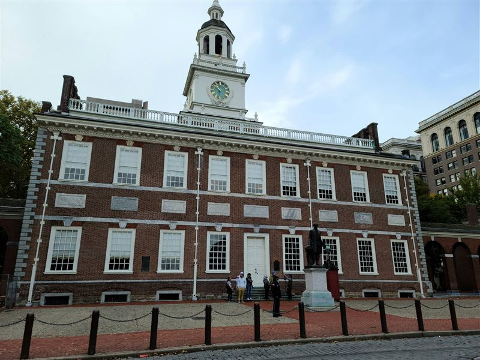
Independence Hall
Independence Hall is a Georgian statehouse where the Second Continental Congress adopted the Declaration of Independence in 1776 and the Constitutional Convention met in 1787. Guided tours cover the Assembly Room and adjacent chambers in Independence National Historical Park.
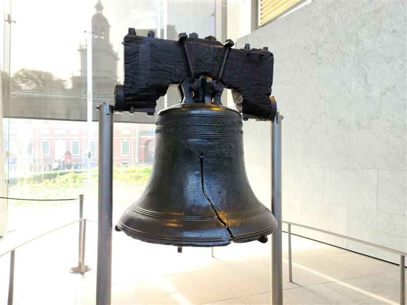
Liberty Bell
The Liberty Bell hung in the Pennsylvania State House and later became a symbol associated with American independence. It is displayed in a dedicated center on Independence Mall with exhibits on its casting, cracking, and public use in the 19th century.
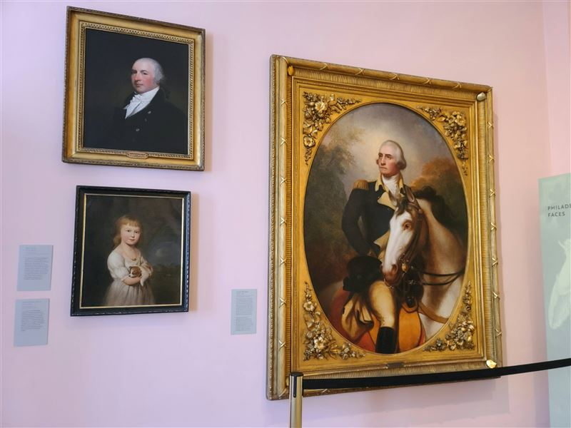
Second Bank of the United States Portrait Gallery
The Second Bank building, designed in Greek Revival style by William Strickland, housed the federal bank from 1824 to 1836. Its portrait gallery now presents paintings of founders and early national figures within Independence National Historical Park.
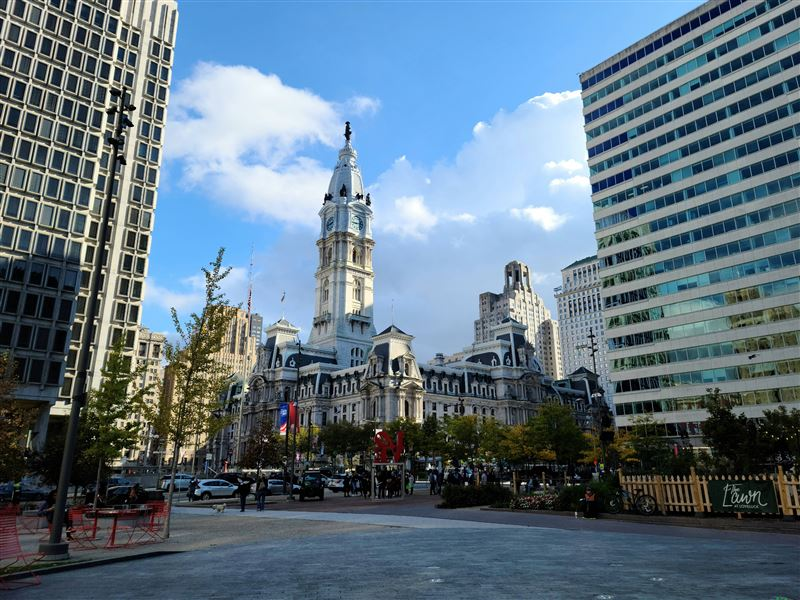
Philadelphia City Hall
Philadelphia City Hall was completed in 1901 after decades of construction in the French Second Empire style. Its tower supports a statue of William Penn and remains the seat of municipal government at the center of Penn's original grid plan.
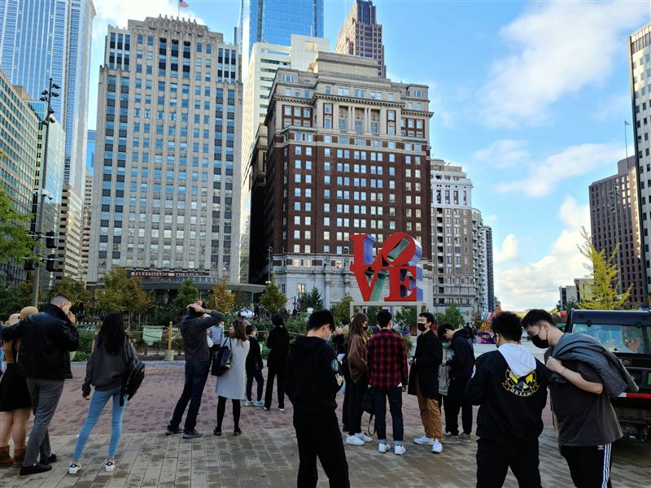
Love Park
Love Park, formally JFK Plaza, sits above the Parkway entrance near City Hall. Robert Indiana's LOVE sculpture has made the plaza a civic gathering space since the 1970s. The square connects the Benjamin Franklin Parkway to Center City.
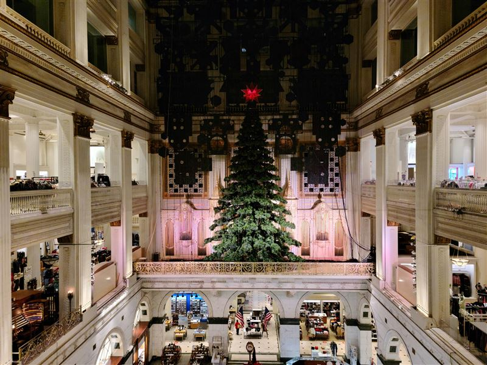
The Wanamaker Building
The Wanamaker Building housed John Wanamaker's department store and contains one of the largest operational pipe organs in the world. The grand court with its bronze eagle remains open to visitors within the converted office and retail complex on Market Street.
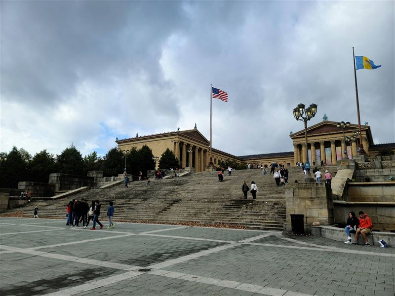
Philadelphia Museum of Art
The Philadelphia Museum of Art occupies a neoclassical building completed in 1928 at the head of the Benjamin Franklin Parkway. Its collections span European, American, and Asian art, and the east entrance steps became widely known through later popular film.
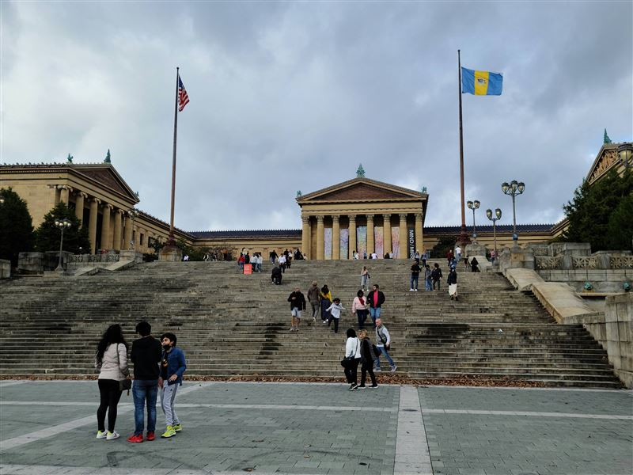
Philadelphia Museum of Art Steps
The east façade steps of the Philadelphia Museum of Art rise from the Parkway to the main entrance. The broad limestone stairway offers views toward the Schuylkill River and Center City and functions as a public gathering place.
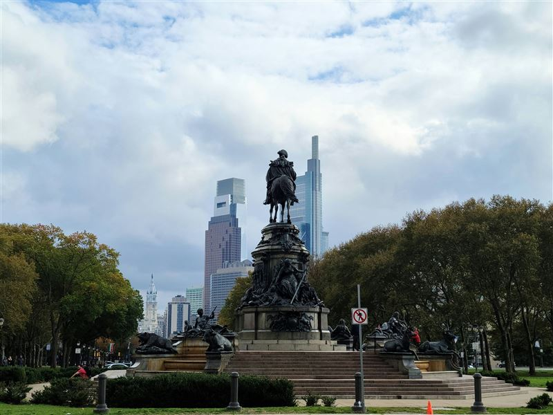
Washington Monument Fountain
The Washington Monument fountain by Rudolf Siemering stands in Fairmount Park west of the Philadelphia Museum of Art. Bronze and granite groups represent the American nation and major rivers at the base of an equestrian statue of George Washington.
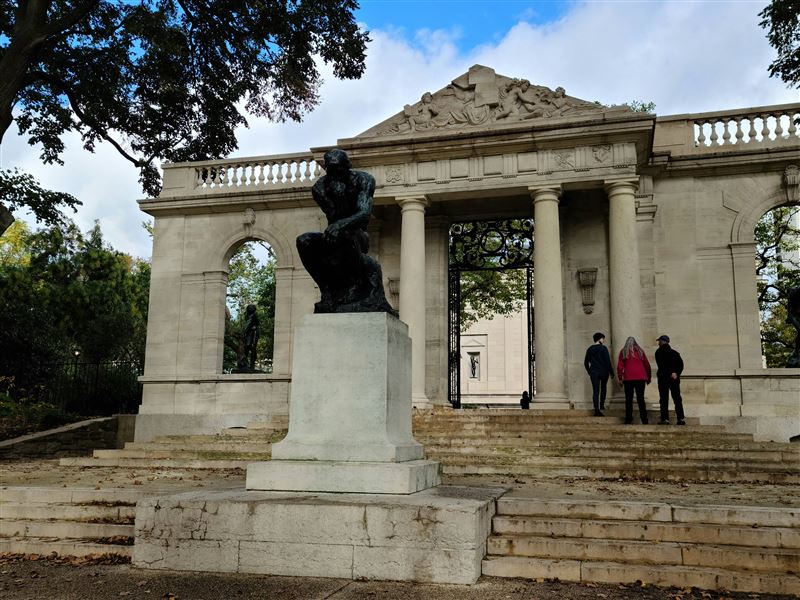
Rodin Museum
The Rodin Museum opened in 1929 as a Beaux-Arts gallery for works collected by Jules Mastbaum. Its garden and interior hold casts including The Thinker and The Gates of Hell, administered with the Philadelphia Museum of Art.
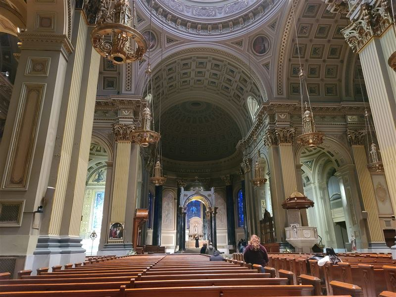
Cathedral Basilica of Saints Peter and Paul
The Cathedral Basilica of Saints Peter and Paul was begun in 1846 and serves as the mother church of the Roman Catholic Archdiocese of Philadelphia. Its brownstone exterior and dome face Logan Square on the Benjamin Franklin Parkway.
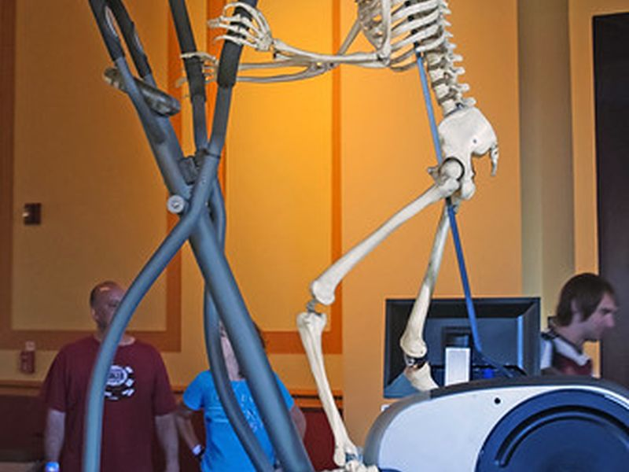
The Franklin Institute
The Franklin Institute is a science museum founded in 1824 and housed in a 1934 Art Deco building on the Parkway. Exhibits cover physics, astronomy, engineering, and the legacy of Benjamin Franklin, including the walk-through Giant Heart.
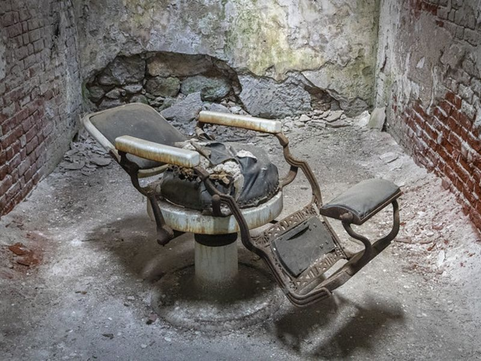
Eastern State Penitentiary
Eastern State Penitentiary opened in 1829 as an influential radial-plan prison designed for solitary confinement. It operated until 1971 and now stands as a stabilized ruin with audio tours through cellblocks and the central rotunda.
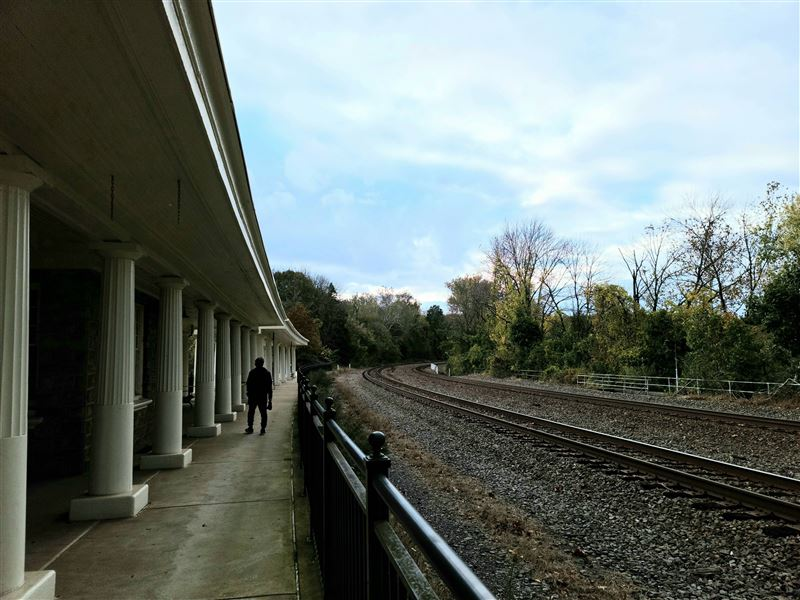
Valley Forge Train Station
The Valley Forge station building at Washington's Headquarters served rail passengers in the early 20th century within Valley Forge National Historical Park. It stands near the encampment site used by the Continental Army during the winter of 1777–78.